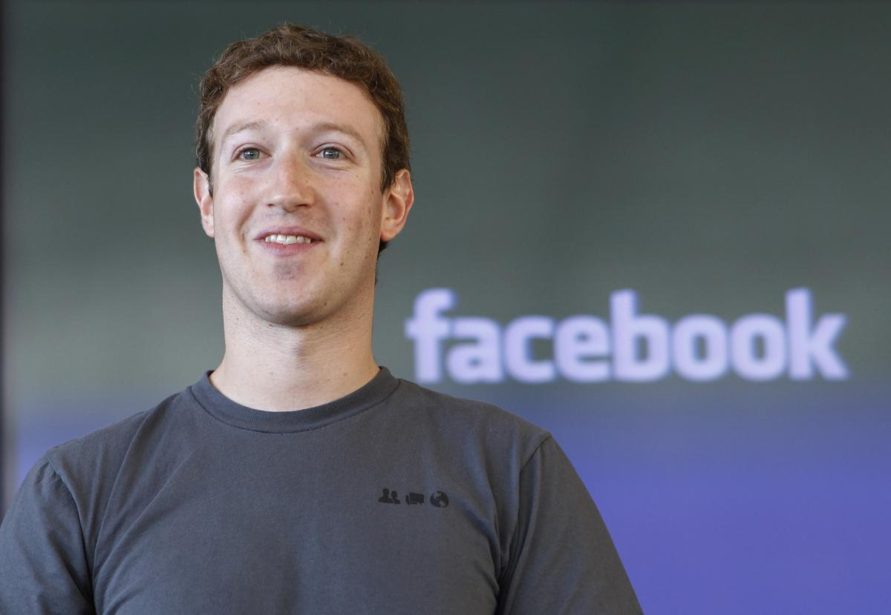

Victoria Paster am 14.Mai 2015 um 12:14 
Der berühmte IT-Unternehmer Mark Zuckerberg hat sich entschieden, seinen Facebook-Account zu löschen.
Zuckerberg verbrachte eigenen Angaben zufolge bis zu 14 Stunden pro Tag im sozialen Netzwerk und bezeichnet
seine Aktivitäten auf Facebook als "unnötige Zeitverschwendung", die ihn von seiner Arbeit abhält.
Doch nicht nur persönliche Gründe, auch Datenschutz-Sorgen spielten in der Entscheidung des Jung-Milliardärs eine Rolle,
wie er im Interview betont: "Ich hab jahrelang private Fotos auf mein Profil geladen und den Chat genutzt", zeigt sich
Zuckerberg besorgt. "Wer weiß, was Facebook mit meinen Daten macht? Ich jedenfalls nicht." Zuckerbergs Anfrage bei der
Datenschutz-Abteilung von Facebook blieb bisher unbeantwortet.
In einem letzten Facebook-Posting rechnet der 30-jährige Milliardär mit seinem virtuellen Freundeskreis ab. "Ich möchte
nicht mehr rund um die Uhr wissen, wer verdammt nochmal gerade mit einer runtastischen Aktivität zehn Meter zum Kühlschrank
gehumpelt ist. Und ich möchte auch nie wieder von einem nichtsnutzigen Künstler zu einer Vernissage eingeladen werden, zu
der 800 Leute zusagen, wo am Ende aber niemand kommt, nicht mal der Künstler selbst."
Zuckerbergs Familie litt schon länger unter seiner Facebook-Sucht: "Mit seinem Vermögen könnten wir eigentlich den Rest
unseres Lebens einfach genießen", erzählt Ehefrau Priscilla Chan. "Mein Mann ist so reich, er könnte für immer Urlaub machen
auf Ibiza. Aber was hat er jahrelang stattdessen gemacht? Hockt von früh bis spät vor Facebook und schaut sich dort Urlaubsfotos
von Freunden an, die auf Ibiza waren."
Suchtexperten warnten Zuckerberg allerdings vor einem kalten Entzug und begleiten ihn nun mit Rat und Tat durch das Leben
nach Facebook. "Der Arzt meinte, ich soll nicht gleich von null auf 100 ohne Facebook leben", erzählt Zuckerberg.
"Ich werde zwar Facebook nicht mehr online nutzen, habe mir aber die Facebook-Profile aller Nutzer ausdrucken lassen,
damit ich nachts vorm Schlafen gehen darin schmökern kann", meint er und zeigt auf die kilometerlange Lagerhalle, in der
gerade dutzende Bagger Milliarden Papierseiten aufstapeln.
Gemeinsam mit Medienvertretern fährt Zuckerberg an seinem ersten Tag ohne Facebook mit einem Bus raus ins Grüne, um
einfach nur die Natur zu genießen. Er hat es geschafft: er hat seine Sucht überwunden und sich von Facebook abgemeldet.
Doch gelegentlich wird Zuckerberg auch in der Offline-Welt rückfällig und verspürt den Drang, soziale Beziehungen und
private Daten zu sammeln. Einmal notiert er sich im Bus alle Gespräche der anderen Reisenden auf seinem Notizblock mit.
Und im Park angekommen, legt er sich zwar auf die Wiese, wird aber schon nach wenigen Minuten unruhig. Schließlich hält
er es nicht mehr aus: Zuckerberg geht von einem picknickenden Paar zum nächsten und bittet, ob sie ihm ihre Urlaubsfotos
zeigen können.